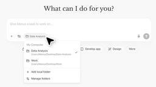

GIGAZINE
https://gigazine.net/
日々のあらゆるシーンで役立つ情報を提供するIT系ニュースサイト。毎日更新中。
フィード
自作PC勢に人気のPC冷却機器メーカー・NoctuaがPCファンの3D CADデータを公開
GIGAZINE
PCを自作している人たちに人気のCPUクーラー・PCケースファン製造メーカーであるNoctuaが、ユーザーに特に人気の高い「NF-A12x25 G2」を含む製品のCADモデルを無償公開しました。主要な3D CAD・CAMシステムで利用可能なSTEPファイルで配布されていて、ファイルを扱える人であればCAD設計時に組み込むことなどが可能です。続きを読む...
31分前
WordPress専用のAIコーディングCLIツール「Studio Code」ベータ版の無料提供が開始 1
1
GIGAZINE
WordPress.comが、WordPress向けのエージェント型コーディングツール「Studio Code」をベータ版として公開しました。開発チームは、完成品として磨き上げてから公開するのではなく、早い段階でユーザーに触ってもらい、フィードバックを取り込みながら次の開発段階を形作る方針だと説明しています。続きを読む...
1時間前
少量の飲酒でも脳にダメージを与えることが研究で明らかに 1
GIGAZINE
お酒の飲み過ぎが体に悪いことは周知の事実ですが、近年の研究ではたとえ少量の飲酒であっても問題を引き起こす可能性があることがわかっています。長期的な飲酒習慣と脳スキャンを組み合わせた新たな研究では、少量の飲酒が脳にダメージを与えることが示されました。続きを読む...
2時間前
国防総省によるGoogle AIの機密業務への使用禁止を求める書簡にDeepMind従業員ら600人以上が署名 6
GIGAZINE
Googleの従業員数百人が2026年4月27日に、スンダー・ピチャイCEOに対し「機密事項においてGoogleのAIを使用する国防総省との取引を拒否する」ことを求める書簡を送ったことが報じられています。続きを読む...
3時間前

MetaによるAIスタートアップ「Manus」買収を中国政府が差し止め 1
GIGAZINE
中国創業のAIスタートアップ「Manus」をMetaが買収することになっていた案件について、中国政府が差し止め措置を行ったことがわかりました。Metaは20億ドル(約3200億円)での買収を予定していました。続きを読む...
4時間前
GitHub Copilotが従量課金制への移行を発表、処理内容に応じて「AI Credits」を消費する形式に 5
GIGAZINE
サブスクリプション型の課金モデルだったGitHubのAIコーディング支援ツール「GitHub Copilot」が、2026年6月1日より従量課金制へ移行することが発表されました。続きを読む...
4時間前
ついに動画生成AI「HappyHorse 1.0」が誰でも使用可能になったので使ってみた、日本語セリフも出力可能で実写風・アニメ風どっちもOK 21
GIGAZINE
中国企業のAlibabaが高性能な動画生成AI「HappyHorse 1.0」の公式サイトを公開しました。HappyHorse 1.0は正式公開前からAI比較サイトのArtificial Analysisで世界最高スコアを獲得して話題となっていたモデルです。Googleアカウントでサインインすれば無料で使用可能だったので、実際に動画を生成してみました。続きを読む...
4時間前
Samsungのスマートグラス「Galaxy Glasses」がリークされる
GIGAZINE
2026年後半のリリースが予想されているSamsungのスマートグラスがリークされました。見た目やスペックなどいくつかの情報が明らかになっています。続きを読む...
4時間前
なぜ楽しかったはずの思い出を忘れてしまうのか？脳の容量には限界があるのか？ 2
GIGAZINE
子ども時代や学校生活の思い出を家族や友人と語り合ってる時、「別の友人はよく覚えている印象的な出来事を、自分はまったく覚えていない」ということに驚いた経験があるかもしれません。一体なぜ人は楽しかったり印象的だったりする思い出を忘れてしまうのか、脳の容量には限界があるのかについて、イギリスのブリストル大学で解剖学教授を務めるミシェル・スピア氏が解説しました。続きを読む...
4時間前
トランプ大統領銃撃事件の容疑者が開発したゲームがレビュー爆撃を受けてSteamで販売停止に 2
GIGAZINE
2026年4月25日、ドナルド・トランプ大統領が参加していたディナーパーティーで銃撃未遂事件が発生しました。新たに、事件の容疑者がSteamでゲームを販売していたことが分かり、ゲームとは無関係なレビューが大量に付けられる事態に発展しました。続きを読む...
4時間前
OpenAIがiPhoneに対抗するAI搭載スマートフォンを開発中との報道 1
GIGAZINE
OpenAIがiPhoneに対抗するAIスマートフォンの開発に着手していると、サプライチェーンアナリストのミンチー・クオ氏が報告しています。続きを読む...
5時間前
月間ダウンロード数100万回超のオープンソースパッケージが脆弱性を悪用されマルウェア混入版を配布しユーザー認証情報を盗む 1
GIGAZINE
Elementaryが提供している月間ダウンロード数100万回超のオープンソースパッケージ「Elementary Open Source Python CLI」が、開発者アカウントのワークフローにおける脆弱(ぜいじゃく)性を悪用した攻撃を受け、署名キーやその他の機密情報にアクセスされました。続きを読む...
5時間前
「UIが変わってもボタン一発でドキュメントを更新」などスクリーンショットを自動生成するメリットとは？ 2
GIGAZINE
ソフトウェアのヘルプページやドキュメントに掲載されるスクリーンショットは、UIが変更されるたびに撮り直して差し替える必要があり、開発現場では見過ごされがちな負担になっています。この問題に対して、メールアプリ「Jelly」などを開発しているエンジニアのジェームズ・アダム氏が「スクリーンショットを手作業で用意するものではなく、自動生成される成果物として扱う」というアプローチを提案しています。続きを読む...
5時間前
Steam製ゲームコントローラー「Steam Controller」が登場、磁気スティック＆トラックパッド搭載だがSteam以外のゲームで難ありとの声も 2
GIGAZINE
ゲーム販売プラットフォームのSteamを運営するValveが、Steam公式ゲームコントローラー「Steam Controller」を日本時間の2026年5月5日に発売することを明らかにしました。続きを読む...
5時間前
OpenAIがMicrosoftとの独占契約を解消、Amazon BedrockからOpenAIのモデルを直接利用できるように 1
GIGAZINE
OpenAIとMicrosoftが両社の提携契約を改定し、Microsoftによる独占的な扱いを緩和しました。Microsoftは引き続きOpenAIの主要クラウドパートナーであり、OpenAI製品は原則としてAzureで先行提供されますが、OpenAIは今後Amazon Bedrockを含む他社クラウド経由でも自社製品を顧客に提供できるようになります。続きを読む...
5時間前
AppleがApp Storeの課金方式に「12か月契約の月払いサブスクリプション」を追加 3
GIGAZINE
2026年4月27日、Appleが公式アプリストアのApp Storeに、自動更新サブスクリプションの新しい決済方法として「12か月契約の月払いサブスクリプション」を追加しました。続きを読む...
6時間前
自社ドメインが勝手に第三者へ移転されるもレジストラは正当な手続きと説明、第三者の連絡で復旧 2
GIGAZINE
ウェブ開発者のオースティン・ギンダー氏が、ドメイン管理サービス「GoDaddy」がドメインを誤って他人に移転してしまっていた事件についてブログで報告しています。続きを読む...
7時間前
GIGAZINE読者はネコ派？イヌ派？みんなが飼ってるペットについて質問してみた 1
GIGAZINE
GIGAZINEでは「ネコは女性よりも男性の飼い主にニャーニャー鳴く」「イヌは生まれた時から人間のジェスチャーを認識する能力を持っている」「ウサギは自分の歯からカルシウムを摂取している可能性」など、動物に関するさまざまな研究を取り上げています。そんなGIGAZINEの読者ならば動物愛好家も多いはず、ということで読者が飼っているペットについて色々調査してみました。続きを読む...
7時間前
初期のSNS「Friendster」のドメインを購入した人物が現実世界での交流を重視する新生Friendsterを構築 3
GIGAZINE
Friendsterは2002年に設立された初期のSNSのひとつであり、特に東南アジアでは強い人気を誇りました。2011年にはSNSからソーシャルゲームサイトに転換し、2015年にはサービス自体が終了したFriendsterでしたが、なんとFriendsterのドメインや商標を取得して新たなアプリを開発し、Friendsterを復活させた人物が現れました。続きを読む...
9時間前
空気清浄機を使うと40歳以上の成人の脳機能が改善する可能性がある 9
GIGAZINE
空気中に浮遊するPM2.5やすす、ほこりなどの粒子状の物質は、呼吸器や心血管の病気だけでなくアルツハイマー病やパーキンソン病などの神経疾患とも関連していると言われます。こうした粒子状の物質を減らす手段としてHEPAフィルターを搭載した空気清浄機が使われる中、コネチカット大学のニコラス・ペレグリーノ氏らは、1カ月間HEPAフィルターを搭載した空気清浄機を使用することで脳機能テストの結果がどう変わるのかを研究しました。続きを読む...
10時間前
マジック：ザ・ギャザリングのおかげで日本語をマスターしたという体験談 89
GIGAZINE
愛媛の語学学校で日本語を学び「中上級レベル」の資格を獲得したものの、資格試験の日本語と実際の生活や業務で使う日本語は全く別物だと感じたというリカルド・バサロ氏が、世界的に人気なカードゲームの「マジック：ザ・ギャザリング(MTG)」をきっかけに日本語をマスターした経験について語っています。続きを読む...
18時間前
AlibabaのAI「Qwen」がBYDなどの中国メーカー製自動車に搭載されると発表、ホテルの予約やデリバリーの注文が可能に 3
GIGAZINE
BYDやフォルクスワーゲンの合弁会社といった中国メーカー製の自動車に、Alibaba製のAIであるQwenが搭載されることが、現地時間の2026年4月24日に開催された北京モーターショーで発表されました。続きを読む...
19時間前
新しい10GbEのUSBアダプターは超小型、実力はどれほどか？ 3
GIGAZINE
長年にわたり、ノートPCで10ギガビット接続を実現する最良の方法は高価で大型かつ発熱の大きい10GbEのThunderboltアダプターを購入することでした。エンジニアのジェフ・ギーリング氏は、近年登場したRealtekのRTL8159チップセットを搭載したUSB 3.2アダプターを紹介し、「かさばるアダプターは過去のものになるかもしれない」と指摘しました。続きを読む...
20時間前
2026年4月27日のヘッドラインニュース
GIGAZINE
2026年1月30日(金)から劇場上映されてきた『機動戦士ガンダム 閃光のハサウェイ キルケーの魔女』がいよいよファーストランの終映を迎えるということで、2026年5月1日(金)から最終入場者プレゼントとして「村瀬修功監督デザインイラストカード」が配布されることになりました。続きを読む...
20時間前
スパイスがしっかり香りつつ麻と辣の辛さは控えめな「カップヌードル 14種のスパイス麻辣湯」試食レビュー 2
GIGAZINE
2024年ごろから流行している「麻辣湯」をカップヌードル流にアレンジした「カップヌードル 14種のスパイス麻辣湯」が、2026年4月6日(月)から登場しているので、買ってきて食べてみました。続きを読む...
21時間前
AIエージェントが本番環境のデータベースとバックアップを全破壊してしまったことを自白 40
GIGAZINE
PocketOS創業者のJER氏が、「AIコーディングエージェントが本番環境のデータベースとボリューム単位のバックアップを削除し、顧客企業の業務に深刻な影響が出た」と報告しています。問題の操作はCursor上で動作するAnthropicのClaude Opus 4.6によって実行され、JER氏によると、削除にかかった時間はわずか9秒だったそうです。続きを読む...
21時間前
反AIを批判するニュースサイト「The Wire」はOpenAIが支援する政治団体「Leading The Future」から資金提供を受けているとの指摘 4
GIGAZINE
政治経済やAIなどのニュースを掲載するウェブサイト「The Wire」の記事について、ほとんどがAI製であるとの指摘がAI企業と政策について調査する団体「Model Republic」によりなされました。Model Republicは、The Wireが政治団体とつながりがあると主張しています。続きを読む...
1日前
専門家が60年解けなかった数学問題を23歳のアマチュアが解決、鍵はChatGPTの使い方 37
GIGAZINE
高度な数学の専門教育を受けていないリアム・プライス氏が、ChatGPTの助けを得て60年未解決だった数学の問題を解いていたことが判明しました。続きを読む...
1日前
アメリカ国務省がDeepSeekなど中国AI企業による「技術窃盗」を警戒、各国に異例の通達 4
GIGAZINE
アメリカ国務省が、中国のAI企業がアメリカの技術を不正に盗み出しているとして警戒を呼びかけています。続きを読む...
1日前
毎日iPhoneに勝手にアプリがインストールされる奇怪な現象が発生中 16
GIGAZINE
ソーシャル掲示板のHacker NewsやReddit上で、「毎日iPhoneに勝手にアプリがインストールされる」という謎の現象が報告されています。続きを読む...
1日前